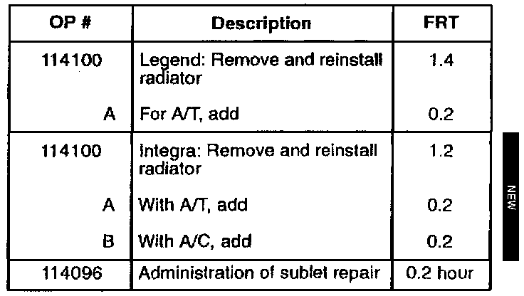

Radiator - Replacement Of Upper Tank
October 14, 1997BULLETIN NO.
96-005
YEAR [NEW]
1991 - 93
1990 - 97
MODEL
LEGEND
INTEGRA [NEW]
VIN APPLICATION
See VEHICLES AFFECTED
Replacement of Radiator Upper Tank
(Supersedes 96-005, dated April 9, 1996)
"New" information is shown by asterisks.
PROBLEM
Pressure and thermal cycling can cause the radiator upper tank to crack.
VEHICLES AFFECTED [NEW]
* Legend Sedan and Coupe:
1991 - 92: All
1993:
Sedan - Thru VIN JH4KA7...PC027523
Coupe - Thru VIN JH4KA8...PC004172
Integra with A/T:
1990 - 91: All with Nippondenso radiator
(Identified as "Denso" on the top tank.)
Integra with M/T:
1990 - 93: All with Nippondenso radiator
(Identified as "Denso" on the top tank.)
1994 - 96: All
1997:
Sedan - Thru VIN JH4DB7...VS005079
Coupe - Thru VIN JH4DC4...VS015437
NOTE:
This bulletin does not apply to the Integra GS-R.*
CORRECTIVE ACTION
Remove the radiator, then replace the upper tank and O-ring with the parts listed under PARTS INFORMATION.
To replace the upper tank, you need a special tool designed to crimp the radiator core retainer tabs to the tank. If you do not have the special tool and the experience needed to use it, sublet the tank replacement to a qualified radiator repair shop.
NOTICE
Do not attempt to remove or install the radiator tank using vise grip or channel lock pliers. If the clamping force at the core retainer tabs is not accurate, the radiator may leak.
PARTS INFORMATION [NEW]
Radiator Upper Tank Set (Upper tank and O-ring):
* Legend: P/N 06190-PY3-A01
Integra:
1990 - 91 with A/T: P/N 06190-PR4-999
1990 - 93 with M/T: P/N 06190-PR3-999
1994 - 97 with M/T: P/N 06190-P72-999*
WARRANTY CLAIM INFORMATION [NEW]
In warranty:
The normal warranty applies.

Out of warranty:
Any repair performed after warranty expiration may be eligible for goodwill consideration by the District Technical Manager or your Zone Office. You must request consideration, and get a decision, before starting work.
[NEW]
Failed P/N: Legend, All: 19010-PY3-902
*1990 - 91 Integra with A/T:
19010-PR4-A54
1990 - 93 Integra with M/T:
19010-PR3-023
1994 - 97 Integra with M/T:
19010-P72-003*
Defect code: 060
Contention code: B06
Template ID: Not used for this bulletin.
Skill level: Repair Technician